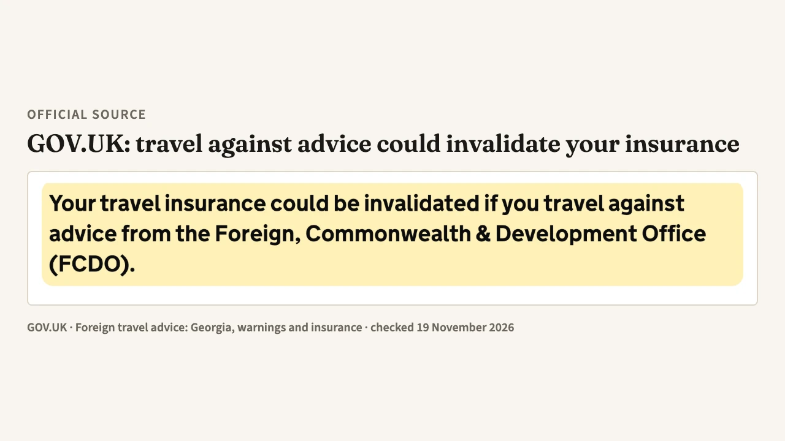
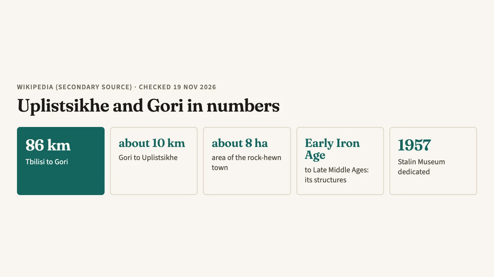

- Uplistsikhe from Gori
- about 10 km
- Gori from Tbilisi
- 86 km
- Site area
- about 8 ha
- Canada
- avoid within 5 km of the boundary line
- Emergency
- 112
This page is about Georgia the country, not the US state, and is part of our guide to healthcare in Georgia. Checked on 19 November 2026.
Uplistsikhe cave town: what you will see
It is a town carved into a high rocky river bank, with halls, passages and steps cut into the stone. Wikipedia describes "an ancient rock-hewn town in eastern Georgia, some 10 kilometers east of the town of Gori, Shida Kartli", built "on a high rocky left bank of the Mtkvari River".
How old it is. Wikipedia says the site contains "structures dating from the Early Iron Age to the Late Middle Ages".
Pagan and Christian. Wikipedia notes the "co-existence of pagan and Christian architecture" on the site. At the top of the complex stands a Christian basilica of the 9th–10th centuries.
Three parts. Wikipedia divides the complex into a southern, a middle and a northern part, "covering an area of approximately 8 hectares". The middle part is joined to the southern one "via a narrow rock-cut pass and a tunnel".
Streets and stairs. "Narrow alleys and sometimes staircases radiate from the central 'street'," Wikipedia says. Our tip: expect uneven rock underfoot, worn steps and a few tight spots.
Hours and tickets. We do not quote opening hours or prices: we found no official English source for them. Check on arrival.
Our tip: what to wear and carry.
- Shoes with a good grip: the stone is uneven, the steps are worn, and the tunnel is narrow.
- Water, more than you think you need, especially from late spring to early autumn.
- A hat and sunscreen: much of the walk is on open rock.
- A small backpack rather than a hand bag, so you can use both hands on the steps.

Gori: the fortress and the Stalin Museum
Two well-known sights stand in the town itself: a medieval citadel and a museum. According to Wikipedia, the town lies 86 kilometres west of Tbilisi, "at the confluence of the rivers Mtkvari and Greater Liakhvi", 588 metres above sea level.
Gori Fortress. Wikipedia calls it "a medieval citadel… situated above the city of Gori on a rocky hill". Our tip: the same grippy shoes you wear at the rock town will help on the hill.
The Joseph Stalin Museum. According to Wikipedia, it is a museum "dedicated to the life of Joseph Stalin", who was born in the town. It has three sections, all on the central square, and was "officially dedicated" to him in 1957. Wikipedia adds: "The museum retains its Soviet-era characteristics."
His birthplace. The house where he was born is part of the museum complex, Wikipedia says.
Hours and tickets. We give only the facts above and do not quote hours or ticket prices; check at the entrance.

Gori and the South Ossetia line: where not to go
Stay well away from the line that separates South Ossetia from the rest of Georgia, and never try to cross it. Both the UK and Canada give clear advice on this, and it matters for a trip from the town.
The UK advice. The GOV.UK warnings page, updated on 12 November 2026, says: "FCDO advises against all travel to the Russian occupied regions of: South Ossetia, Abkhazia". It adds: "FCDO also advises against all but essential travel to areas immediately next to the administrative boundary lines with South Ossetia and Abkhazia."
Your cover. The same page warns: "Your travel insurance could be invalidated if you travel against advice from the Foreign, Commonwealth & Development Office (FCDO)." Read your own policy for a similar condition before the trip.
Canada: the 5 km zone. Canada's travel advice, updated 27 August 2026, tells travellers to avoid all travel "within 5 km of the administrative boundary line with the occupied regions of Abkhazia and South Ossetia, excluding Highway E60".
The line is hard to see. Canada says the lines "are not well defined and change frequently". It warns: "You could be detained and arrested if you cross into these regions, even by mistake."
Landmines. "Unexploded ordnance and landmines may pose a risk… especially in areas along the administrative boundary lines," Canada adds.
How far is the line from the town? We found no official figure for the distance, so we do not give one. On the FCDO briefing map (Edition 4, October 2025), the town is shown just south of South Ossetia, outside the zones the UK advises against; the rock-hewn town is not marked. The map itself says it is not to be used for "determining the precise location of places", and Canada says the lines "change frequently", so check the latest advice before you go.
Our tip.
- Keep to the main roads; Wikipedia notes that the town is close to the Georgian–Ossetian conflict zone.
- Do not go "to look at the line", and do not follow anyone who offers to show it to you.
- If a navigation app suggests a shortcut along back roads through villages, ignore it and ask locally.
- Keep your passport with you.
For roads, crime and the rest of the country, read Is Georgia safe?
![Infographic headed "The South Ossetia line: what two governments say", two cards. United Kingdom (FCDO), updated 12 November 2026: against all travel to South Ossetia and Abkhazia; against all but essential travel to areas immediately next to the boundary lines; insurance could be invalidated if you go against this advice. Canada, updated 27 August 2026: avoid all travel within 5 km of the boundary line, except Highway E60; lines are not well defined and change frequently; you could be detained if you cross, even by mistake; landmines and unexploded ordnance near the lines](../assets/img/uplistsikhe/boundary-advice-mob.webp)

Heat on the rock: summer at Uplistsikhe
Expect strong sun and plan your visit for the cooler part of the day. Wikipedia's article on the town is brief about the season: "Summer is usually hot."
Wildfires. The UK's safety advice says: "Lightning and wildfires are a risk in summer, particularly in the mountains." Our tip: do not smoke near dry grass, and leave if you see smoke.
Our tip: on a hot day.
- Arrive early in the morning or come in the late afternoon.
- Drink before you feel thirsty, and carry more water than you expect to need.
- Rest in the shade of the rock-cut halls between climbs.
- Stop and cool down if you feel dizzy, sick or have a headache.
For the signs of heat illness and what to do, read our heat advice in the Batumi guide.
Getting there from Tbilisi
Head for Gori first, then on to Uplistsikhe. Wikipedia puts the town 86 kilometres west of the capital and the ancient site some 10 kilometers east of it.
Times and fares. We do not give bus or train times, fares or driving times: we found no official source for them. Ask your host or the station the day before.
On the road. Canada's 5 km zone has one exception, Highway E60. Wherever you drive, stay on main roads and do not leave them towards the line to save time.
Our tip. Save an offline map with Uplistsikhe marked before you leave. It works if the signal drops, and you will need to say exactly where you are if you call for help.

Medical help in Gori
Plan for help to take time in the countryside. The UK's health advice says: "Outside Tbilisi, medical facilities are limited."
Rural areas. Canada's advice says: "In rural areas, there are shortages of medical supplies and personnel." It adds: "First responders may not be able to access rural areas."
In an emergency. The UK advice says: "Dial 112 and ask for an ambulance." Here is how to call an ambulance on 112 and what to say. Our tip: give the site name and which part of the complex you are in.
Clinics in Gori. The town, some 10 km from the site, has clinics in our catalogue. The catalogue of clinics in Gori on 100doc.ge listed 11 clinics when we checked on 19 November 2026.
Your cover. Visitors need health and accident cover of at least 30,000 GEL for their whole stay; see the entry rule on travel insurance.
Frequently asked questions
How far is Uplistsikhe from Tbilisi and Gori?
Wikipedia puts Gori 86 km west of Tbilisi and the rock-hewn town some 10 km east of it. We do not give travel times.
What is there to see?
Rock-cut halls, passages and stairs above the Mtkvari, with a 9th–10th century basilica at the top, according to Wikipedia.
Is it safe, with South Ossetia so near?
Gori lies close to South Ossetia. The UK advises against all travel to the occupied region and against all but essential travel to areas immediately next to its administrative boundary line; Canada says to avoid the 5 km next to the line, except Highway E60. On the FCDO map Gori is outside those zones, but the map is not meant for precise locations. Check the latest advice, stay on main roads and keep away from the line.
Can I visit the boundary line?
No. Canada says to avoid the area within 5 km of the line, except Highway E60, and warns you could be detained if you cross, even by mistake. There may also be landmines.
Is it hot in summer?
Wikipedia says summer is usually hot. Go early, carry water and a hat, and read our heat advice.
What is the Stalin Museum?
A museum in Gori dedicated to the life of the Soviet leader, who was born there. Wikipedia says it was officially dedicated in 1957 and retains its Soviet-era characteristics.
Where can I find a doctor nearby?
In Gori: the catalogue on 100doc.ge listed 11 clinics there. In an emergency, dial 112 and ask for an ambulance.
Sources
- Wikipedia: Uplistsikhe (secondary source)
- Wikipedia: Gori (secondary source)
- Wikipedia: Gori Fortress (secondary source)
- Wikipedia: Joseph Stalin Museum (secondary source)
- FCDO briefing map of Georgia, Edition 4, October 2025 (PDF)
- GOV.UK travel advice for Georgia: warnings and insurance
- GOV.UK travel advice for Georgia: health
- GOV.UK travel advice for Georgia: safety and security
- Government of Canada: travel advice for Georgia
This guide is general information, not medical advice: the doctor decides on your care.